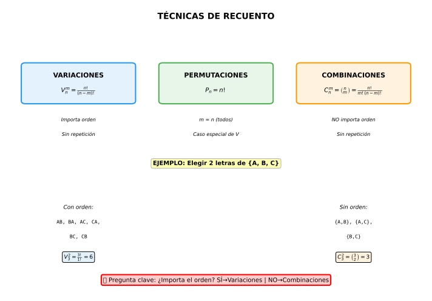

| Técnica | Fórmula | ¿Importa orden? | ¿Repetición? |
|---|---|---|---|
| Variaciones | \(V_n^m = \frac{n!}{(n-m)!}\) | ✓ SÍ | ✗ NO |
| Permutaciones | \(P_n = n!\) | ✓ SÍ | Caso especial: m=n |
| Combinaciones | \(C_n^m = \binom{n}{m} = \frac{n!}{m!(n-m)!}\) | ✗ NO | ✗ NO |
| Variaciones con repetición | \(VR_n^m = n^m\) | ✓ SÍ | ✓ SÍ |

Ej 1: Urna con 10 bolas numeradas 1-10. Extraemos 3 bolas sin reposición. ¿Probabilidad de que las 3 sean pares?
Análisis:
Casos POSIBLES (extraer 3 de 10):
Casos FAVORABLES (3 pares de las 5 disponibles):
Probabilidad:
Interpretación: Solo 8.3% de probabilidad de sacar 3 pares.
Ej 2: ¿De cuántas formas se pueden sentar 5 personas en fila? Si siempre sentamos a Ana y Luis juntos, ¿cuántas formas hay?
a) Sin restricciones (importa orden, todos los elementos):
b) Ana y Luis juntos:
Pero ¡Ana y Luis pueden estar en orden Ana-Luis o Luis-Ana!
Total:
Ej 3: Lotería: Elegir 6 números de 49. ¿Probabilidad de acertar los 6?
Análisis:
Casos POSIBLES (todas las combinaciones de 6 de 49):
Casos FAVORABLES (solo UNA combinación ganadora):
Probabilidad:
Interpretación: Menos de 1 entre 14 millones. ¡Extremadamente improbable!
Ej 4 (Contexto Vigo): Comité estudiantil del IES Teis: 8 de Bach, 6 de 4º ESO. Formar comité de 5 personas con AL MENOS 3 de Bach. ¿Cuántas formas? ¿Probabilidad de que sea exactamente 3 de Bach?
Total estudiantes: 8 + 6 = 14
Casos "al menos 3 de Bach":
Caso 1 (3+2):
Caso 2 (4+1):
Caso 3 (5+0):
Total formas:
Probabilidad de EXACTAMENTE 3 de Bach:
Total de comités posibles de 5 de 14:
Casos favorables (ya calculamos): 840